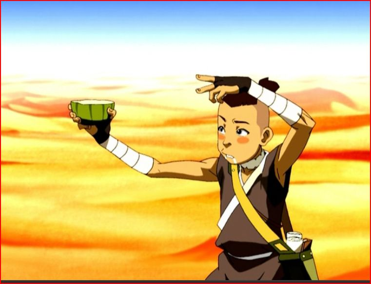

Cactus Juice Cocktail

A natural and refreshing cocktail made with cactus juice
Cactus juice is a naturally occurring liquid found in certain succulent plants of the Si Wong Desert. It contains hallucinogens which cause those who consume it to temporarily fall into a deranged mental state.
Ingredients
- ½ fluid ounce Gran Gala Triple Orange Liqueur
- 2 fluid ounces Corazon Blanco Tequila
- 1 fluid ounce fresh lime juice
- 1 fluid ounce cactus juice or cactus juice syrup
Instructions
- Shake together all ingredients with ice and strain into a margarita glass.
- Optional: rub the cut side of a lime on the glass rim and dip it into salt; and add a lime wedge to the rim of the glass as a garnish.